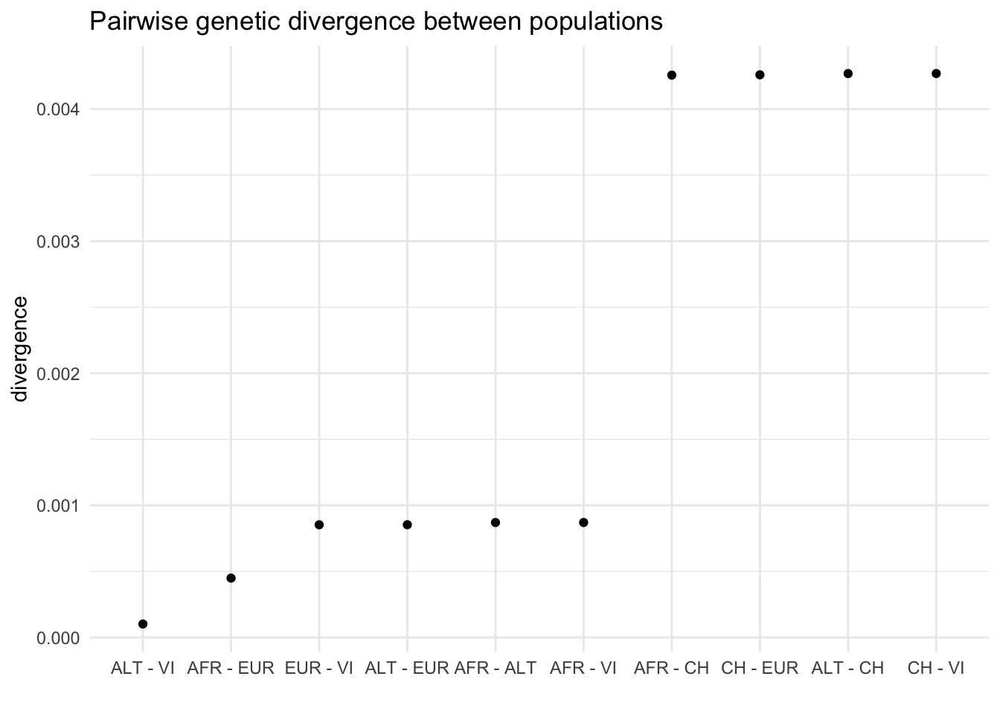

Many problems in population genetics cannot be solved by a mathematician, no matter how gifted. [It] is already clear that computer methods are very powerful. This is good. It […] permits people with limited mathematical knowledge to work on important problems […]
How would you design an algorithm for a popgen simulation?
What minimum components are needed for the program to to be useful?
If we want to simulate population genetics
We need populations.
We need genetics.
A chromosome is…
…a linear sequence of nucleotides…
a list of characters (A/G/C/T nucleotides)
a list of 0 or 1 values (alternative/derived allele)
… which accumulates mutations every generation at a given mutation rate.
A population is…
A collection of individuals at a given point in time.
Each individual carrying two homologous chromosomes inherited from two parents in the previous generation.
Chromosomes recombine at a certain recombination rate.
Home-brewed single-locus simulations in R
Let’s make the algorithm even more minimal by focusing on the evolution of a single mutation across time (i.e. no mutation process, no recombination).
Some basic setup
If you want to try the following couple of examples yourself, you will need to paste the following lines into your R session (either R in the terminal, or better an RStudio session):
The following object is masked from 'package:dplyr':
select
set.seed(42)
Single-locus simulation
N <-500# number of (haploid) individuals in the populationgenerations <-500# number of generations to run the simulation forp_start <-0.5# initial allele frequency# initialize an (empty) trajectory vector of allele frequenciesp_traj<-rep(NA, generations)p_traj[1] <- p_start# in each generation...for (gen_i in2:generations) { p <- p_traj[gen_i -1] # get the current frequency# ... calculate the allele frequency in the next generation ... p_next <-rbinom(1, N, p) / N# ... and save it to the trajectory vector p_traj[gen_i] <- p_next}p_traj
\(N\) = 500, \(p_0 = 0.5\)
Code
plot(p_traj, type ="l", ylim =c(0, 1),xlab ="generations", ylab ="allele frequency")abline(h = p_start, lty =2, col ="red")
Let’s make it a function
Input:\(N\), \(p_0\) and the number of generations
Output: allele frequency trajectory vector
simulate <-function(N, p_start, generations) {# initialize an (empty) trajectory vector of allele frequencies p_traj<-rep(NA, generations) p_traj[1] <- p_start# in each generation...for (gen_i in2:generations) { p <- p_traj[gen_i -1] # get the current frequency# ... calculate the allele frequency in the next generation ... p_next <-rbinom(1, N, p) / N# ... and save it to the trajectory vector p_traj[gen_i] <- p_next } p_traj}
All but the most trivial simulations require lots of code
90% of simulations are basically the same!
create populations (splits and \(N_e\) changes)
specify if/how they should mix (rates and times)
save output (VCF, EIGENSTRAT)
Lot of code duplication across projects
slendr makes “standard” simulations trivial (for newbies and experts) and unlocks new kinds of spatial simulations
Let’s get started
We will use slendr & tidyverse
First run this:
library(tidyverse) # table processing/filtering and plottinglibrary(slendr) # simulation and tree-sequence analysis
The interface to all required Python modules has been activated.
Attaching package: 'slendr'
The following object is masked from 'package:MASS':
area
(ignore the message about missing SLiM)
Then run this (and wait for the Python installation to finish!):
setup_env()
The entire lecture & exercises will be in R!
Workaround for an RStudio bug
RStudio sometimes interferes with Python setup that we need for simulation. To fix this, go to Tools -> Global Options in your RStudio and set the following options:
slendr workflow:
Build models from simple components
Then simulate data from them
All within a single R script
Typical steps
creating populations
scheduling population splits
programming \(N_e\) size changes
encoding gene-flow events
simulation sequence of a given size
computing statistics from simulated outputs
Creating a population
A name, size and the time of appearance must be given:
pop1 <-population("pop1", N =1000, time =1)
Typing an object prints out a summary in the R console:
pop1
slendr 'population' object
--------------------------
name: pop1
non-spatial population
stays until the end of the simulation
population history overview:
- time 1: created as an ancestral population (N = 1000)
For R experts – what are the population objects?
class(pop1)
[1] "slendr" "slendr_pop" "list"
names(pop1)
[1] "pop" "time"
str(pop1)
List of 2
$ pop : chr "pop1"
$ time: int 1
- attr(*, "remove")= num -1
- attr(*, "parent")= chr "ancestor"
- attr(*, "map")= logi FALSE
- attr(*, "history")=List of 1
..$ :'data.frame': 1 obs. of 8 variables:
.. ..$ pop : chr "pop1"
.. ..$ event : chr "split"
.. ..$ time : int 1
.. ..$ N : int 1000
.. ..$ competition : logi NA
.. ..$ mating : logi NA
.. ..$ dispersal : logi NA
.. ..$ dispersal_fun: chr "normal"
- attr(*, "class")= chr [1:3] "slendr" "slendr_pop" "list"
Programming population splits
Splits are indicated by the parent = <pop> argument:
pop2 <-population("pop2", N =100, time =50, parent = pop1)
The split is reported in the “historical summary”:
pop2
slendr 'population' object
--------------------------
name: pop2
non-spatial population
stays until the end of the simulation
population history overview:
- time 50: split from pop1
Scheduling resize events – resize()
Step size decrease:
pop1 <-population("pop1", N =1000, time =1)pop1_step <-resize(pop1, N =100, time =500, how ="step")
Exponential increase:
pop2 <-population("pop2", N =100, time =50, parent = pop1)pop2_exp <-resize(pop2, N =10000, time =500, end =2000, how ="exponential")
pop1 <-population("pop1", N =1000, time =1) %>%resize(N =100, time =500, how ="step")
Exponential increase:
pop2 <-population("pop2", N =1000, time =1) %>%resize(N =10000, time =500, end =2000, how ="exponential")
This accomplishes the same thing as the code on the previous slide, but it is a bit more “elegant”.
More complex full model
pop1 <-population("pop1", N =1000, time =1)pop2 <-population("pop2", N =1000, time =300, parent = pop1) %>%resize(N =100, how ="step", time =1000)pop3 <-population("pop3", N =1000, time =400, parent = pop2) %>%resize(N =2500, how ="step", time =800)pop4 <-population("pop4", N =1500, time =500, parent = pop3) %>%resize(N =700, how ="exponential", time =1200, end =2000)pop5 <-population("pop5", N =100, time =600, parent = pop4) %>%resize(N =50, how ="step", time =900) %>%resize(N =250, how ="step", time =1200) %>%resize(N =1000, how ="exponential", time =1600, end =2200) %>%resize(N =400, how ="step", time =2400)
Remember: each object carries its history
pop5
slendr 'population' object
--------------------------
name: pop5
non-spatial population
stays until the end of the simulation
population history overview:
- time 600: split from pop4
- time 900: resize from 100 to 50 individuals
- time 1200: resize from 50 to 250 individuals
- time 1600-2200: exponential resize from 250 to 1000 individuals
- time 2400: resize from 1000 to 400 individuals
Last step before simulation: compilation
model <-compile_model(list(pop1, pop2, pop3, pop4, pop5),generation_time =1,simulation_length =3000)
Compilation takes a list of model components, performs internal consistency checks, returns a single model object.
Model summary
Typing the compiled model prints a brief summary:
model
slendr 'model' object
---------------------
populations: pop1, pop2, pop3, pop4, pop5
geneflow events: [no geneflow]
generation time: 1
time direction: forward
total running length: 3000 model time units
model type: non-spatial
configuration files in: /private/var/folders/d_/hblb15pd3b94rg0v35920wd80000gn/T/Rtmp3RrClz/file1610a50f34ba
The model is also saved to disk! (The location can be specified via path = argument to compile_model()):
(As full as possible) a representation of our samples’ history:
And this is exactly what tree sequences give us.
How does it work?
This simulates 20 \(\times\) 10000 chromosomes of 100 Mb.
In less than 30 seconds.
That’s a crazy amount of data!
And it only requires 66.1 Mb of memory!
ts <-population("pop", time =100000, N =10000) %>%compile_model(generation_time =1, direction ="backward") %>%msprime(sequence_length =100e6, recombination_rate =1e-8)ts
A tree (sequence) can be represented by tables of:
nodes (“chromosomes”)
edges (branches) between nodes
mutations on edges
individuals (who carry nodes)
populations
A set of such tables is a tree sequence.
Tree-sequence tables in practice
Registered S3 method overwritten by 'ggtree':
method from
identify.gg ggfun
ggtree v3.2.1 For help: https://yulab-smu.top/treedata-book/
If you use ggtree in published research, please cite the most appropriate paper(s):
1. Guangchuang Yu. Using ggtree to visualize data on tree-like structures. Current Protocols in Bioinformatics. 2020, 69:e96. doi:10.1002/cpbi.96
2. Guangchuang Yu, Tommy Tsan-Yuk Lam, Huachen Zhu, Yi Guan. Two methods for mapping and visualizing associated data on phylogeny using ggtree. Molecular Biology and Evolution. 2018, 35(12):3041-3043. doi:10.1093/molbev/msy194
3. Guangchuang Yu, David Smith, Huachen Zhu, Yi Guan, Tommy Tsan-Yuk Lam. ggtree: an R package for visualization and annotation of phylogenetic trees with their covariates and other associated data. Methods in Ecology and Evolution. 2017, 8(1):28-36. doi:10.1111/2041-210X.12628
Attaching package: 'ggtree'
The following object is masked from 'package:tidyr':
expand
If you feel the servers are slow, you can also use your own laptop (setup instructions are here).
Workaround for an RStudio bug
RStudio sometimes interferes with Python setup that we need for simulation. To fix this, go to Tools -> Global Options in your RStudio and set the following options:
Exercise #1
Collaborator Hestu gave you AFS computed from 10 individuals of a sub-species of the bushy-tailed squirrel discovered in the Forest of Spirits in the land of Hyrule:
Fossil evidence is consistent with constant size of the population over 100,000 generations of its history. An Oracle you met in the Temple of Time said that the true squirrel \(N_e\) has been between 1000 and 30000.
Use slendr to simulate history of this species. Use this to guess the likely value of squirrel’s \(N_e\) given the observed AFS.
Exercise #1 – hints
Write a function that gets \(N_e\) as input and returns the AFS.
Find the \(N_e\) value that will give the closest AFS to the one you got from Hestu. Use whatever method you’re comfortable with based on your programming experience:
i ) Plot simulated AFS for different \(N_e\) with the AFS and just eye-ball \(N_e\) value that looks correct.
ii ) Simulate AFS across a grid of \(N_e\) values and find the closest matching one (maybe use mean-squared error?)
iii ) Run a mini-Approximate Bayesian Computation, using the Oracle’s range of [10000, 30000] as a uniform prior.
The squirrels have split into three species with different demographic histories (s1, s2, s3 – model on the right). Species s2 and s3 are daughter populations which split in generation 2 from the original species s1.
Help the Oracle predict the future shape of the AFS of the squirrels after 10000 generations, assuming starting \(N_e\) = 6543? Species s1 will remain constant, species s2 will expand 3X, species s3 will get 3X smaller.
Use ts_diversity() to compute diversity in each simulated population (CH, AFR, …).
Does the result match the expectation given demographic history?
What about divergence between all pairs of populations (ts_divergence())? Do your results recapitulate phylogenetic relationships? How about ts_f3() or ts_fst()?
# A tibble: 10 × 3
x y divergence
<chr> <chr> <dbl>
1 ALT VI 0.000102
2 AFR EUR 0.000449
3 EUR VI 0.000853
4 ALT EUR 0.000854
5 AFR ALT 0.000870
6 AFR VI 0.000871
7 AFR CH 0.00426
8 CH EUR 0.00426
9 ALT CH 0.00427
10 CH VI 0.00427
Code
divergence %>%mutate(pair =paste(x, "-", y),pair =fct_reorder(pair, divergence)) %>%ggplot(aes(pair, divergence)) +geom_point() +labs(x ="", y ="divergence") +ggtitle("Pairwise genetic divergence between populations") +theme_minimal()

Sampling “ancient DNA” time-series
By default, slendr records every individual living at the end of the simulation. Sampling can be also scheduled explicitly:
x_schedule <-schedule_sampling( model, times =seq(from =7000, to =4000, by =-100),list(x1, 5), list(x2, 5))abco_schedule <-schedule_sampling( model, times =7000,list(a, 1), list(b, 1), list(c, 1), list(o, 1))schedule <-rbind(x_schedule, abco_schedule)
The schedule can be used in an msprime() call like this:
# A tibble: 1 × 5
W X Y Z f4
<chr> <chr> <chr> <chr> <dbl>
1 x1_1 x2_1 b_1 o_1 -0.0000000275
ts_f4(ts, "x1_100", "x2_100", "b_1" , "o_1")
# A tibble: 1 × 5
W X Y Z f4
<chr> <chr> <chr> <chr> <dbl>
1 x1_100 x2_100 b_1 o_1 0.00000103
Computing \(f_4\) statistic for all x individuals
# extract information about samples from populations x1 and x2x_inds <-ts_samples(ts) %>%filter(pop %in%c("x1", "x2"))# create a vector of individual's names# (used as input in ts_<...>() functionsx_names <- x_inds$name# iterate over all sample names, compute# f4(X, C; B, O)f4_result<-map_dfr( x_names,function(w) ts_f4(ts, W = w, X ="c_1", Y ="b_1" , Z ="o_1"))# add the f4 value as a column to the sample information tablex_inds$f4 <- f4_result$f4
Only the coalescent nodes of genealogies involving these samples will be retained.
Extracting a tree #1734
tree <-ts_phylo(ts_small, 1734, quiet =TRUE)
Code
# this needs another R package# simply using the ape package and running `plot(tree)` will also worklibrary(ggtree)nodes <-ts_nodes(tree) %>% as_tibble %>% dplyr::select(node = phylo_id, pop)p_tree <-ggtree(tree) %<+% nodes +geom_tiplab(aes(color = pop, fill = pop)) +guides(color ="none") +scale_x_continuous(limits =c(-7e6, 900e3)) +geom_vline(xintercept =-700e3, linetype =2, color ="red")revts(p_tree)
Extracting a tree #1
tree <-ts_phylo(ts_small, 1, quiet =TRUE)
Code
# this needs another R package# simply using the ape package and running `plot(tree)` will also worklibrary(ggtree)nodes <-ts_nodes(tree) %>% as_tibble %>% dplyr::select(node = phylo_id, pop)p_tree <-ggtree(tree) %<+% nodes +geom_tiplab(aes(color = pop, fill = pop)) +guides(color ="none") +scale_x_continuous(limits =c(-7e6, 900e3)) +geom_vline(xintercept =-700e3, linetype =2, color ="red")revts(p_tree)
Introgression?
Extracting a tree #903
tree <-ts_phylo(ts_small, 903, quiet =TRUE)
Code
# this needs another R package# simply using the ape package and running `plot(tree)` will also worklibrary(ggtree)nodes <-ts_nodes(tree) %>% as_tibble %>% dplyr::select(node = phylo_id, pop)p_tree <-ggtree(tree) %<+% nodes +geom_tiplab(aes(color = pop, fill = pop)) +guides(color ="none") +scale_x_continuous(limits =c(-7e6, 900e3)) +geom_vline(xintercept =-700e3, linetype =2, color ="red")revts(p_tree)
Introgression?
Bonus exercise #2
Try to implement something relevant for your own work
Program a demographic model for your species of interest
Choose a statistic whose value “true value” you know from the literature (divergence? diversity? f4-statistic? ancestry proportion?)
Try to replicate the statistic in a slendr simulation using some of its ts_<...>() tree-sequence functions!
Bonus exercise #3
Try to implement your own D-statistic
You can extract data from a tree sequence in the form of a genotype table using the function ts_genotypes().
This function returns a simple R data frame:
each column for an individual
each row for a site
each cell giving the number of derived alleles in that individual at that site
Use the genotype table to compute your own ABBA/BABA statistic on the Neanderthal model data and check if you can recover the same signal as you get from ts_f4().